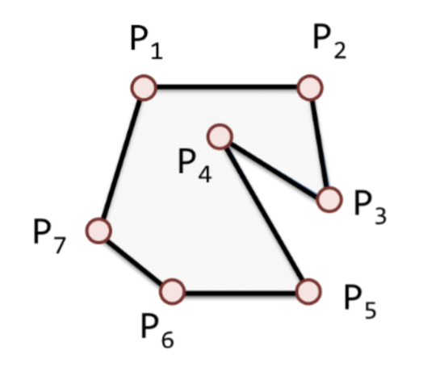
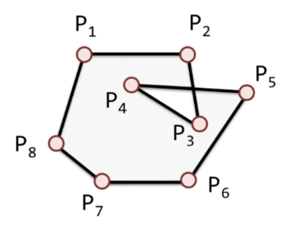

5.1. Polígonos Simples
Seja \(v = \{ v_1, v_2, ..., v_n \}\) um conjunto de \(n\) pontos no plano, com \(n > 3\). Seja \(s = ( s_1, s_2, ..., s_n )\), uma sequência de \(n-1\) segmentos conectando os \(n\) pontos de \(v\), tal que \(s_i = \overline{v_iv_{i+1}}\), com \(1 < i < (n - 1)\). Os segmentos formam um polígono simples, \(P\), se:
As intersecções entre segmentos adjacentes em \(P\) ocorrerem apenas nos pontos extremos ligando esses segmentos, isto é, se \(s_i \cap s_{i+1} = v_{i+1}\).
Não ocorrer intersecção entre segmentos não-adjacentes, isto é, \(s_i \cap s_j = \varnothing, \forall i, j | j \neq i+1\).
A Figura (a) na Tabela 5.1 mostra um polígono simples, enquanto a Figura (b), um polígono que não é simples. Repare que na fronteira do polígono classificado como não sendo simples, as arestas \(\overline{P_2P_3}\) e \(\overline{P_4P_5}\) possuem uma intersecção, que é denominada de auto-intersecção (self-intersction).
( a ) Polígono simples |
( b ) Polígono não-simples |
|---|---|
 |
 |
Vários algoritmos geométricos são implementados supondo que o dado de entrada se trata de uma linha ou polígono simples, isto é, onde não há auto-intersecções. Por isso, é importante validar os dados carregados em um banco de dados geográfico, para evitar comportamentos anômalos durante a execução de consultas envolvendo os operadores espaciais.
5.1.1. Verificação de Geometrias com o PostGIS
A extensão PostGIS inclui algumas funções relacionadas à verificação de geometrias:
ST_IsSimple: Esta função verifica se os anéis de um polígono ou se um conjunto de linhas não possui auto-intersecção. No caso de polígonos com buracos (ou anéis internos), verifica se há pontos de tangência entre esses anéis.Vamos verificar na tabela
uf(carregada na Seção 3.5.1) se há alguma geometria que não seja simples:SELECT gid, nome FROM uf WHERE NOT ST_IsSimple(geom);
Saída:
gid | nome -----+------ 26 | PARÁ (1 row)
ST_IsValid: Esta função se aplica principalmente a geometrias do tipoPolygoneMultiPolygon. Além de garantir que os anéis da fronteira desses elementos geométricos sejam simples, ela realiza as seguintes verificações:No caso de elementos geométricos do tipo
Polygon, verifica se seus anéis não possuem cruzamentos, se os anéis internos estão de fato todos contidos no anel externo, se não interseções entre o anel externo e algum anel interno que forme um objeto 1-dimensional (linha), que os anéis se toquem apenas em pontos tangentes.No caso de elementos geométricos do tipo
MultiPolygon, verifica se os elementos são polígonos válidos, se não sobreposição entre os polígonos da coleção, que os polígonos se toquem no máximo em pontos (e não em ao longo de uma linha).
Essa função pode emitir uma mensagem sobre o que está invalidando uma geometria. Vamos usar o exemplo anterior, da tabela
ufpara ver o que tornava a geometria do Estado do Pará uma geometria que não é simples:SELECT gid, nome FROM uf WHERE NOT ST_IsValid(geom);
Saída:
NOTICE: Ring Self-intersection at or near point -46.63302648399997 -0.92200645999997732 gid | nome -----+------ 26 | PARÁ (1 row)Essa função permite ser chamada com um segundo argumento que faz com que a mensagem não seja emitida:
SELECT gid, nome FROM uf WHERE NOT ST_IsValid(geom, 0);
Saída:
gid | nome -----+------ 26 | PARÁ (1 row)
ST_IsValidReason: Esta função retorna uma string com o motivo da geometria não ser válida:SELECT gid, nome, ST_IsValidReason(geom) FROM uf WHERE NOT ST_IsValid(geom, 0);
Saída:
gid | nome | st_isvalidreason -----+------+---------------------------------------------------------- 26 | PARÁ | Ring Self-intersection[-46.633026484 -0.922006459999977] (1 row)
ST_IsValidDetail: Esta função retorna um objeto composto por três campos:valid: Valor lógico que indica se a geometria é ou não válida.reason: Texto explicativo do motivo da geometria não ser considerada válida.location: Que indica onde a geometria é inválida.
SELECT gid, nome, valid( ST_IsValidDetail(geom) ), reason( ST_IsValidDetail(geom) ), ST_AsText( location( ST_IsValidDetail(geom) ) ) AS location FROM uf WHERE NOT ST_IsValid(geom, 0);
Saída:
gid | nome | valid | reason | location -----+------+-------+------------------------+---------------------------------------------- 26 | PARÁ | f | Ring Self-intersection | POINT(-46.63302648399997 -0.922006459999977) (1 row)
ST_MakeValid: Esta função tenta criar uma nova geometria válida a partir da geometria de entrada, sem perder os vértices da geometria original.SELECT gid, nome, ST_IsValid(ST_MakeValid(geom)) AS valida, ST_NPoints(ST_MakeValid(geom)) AS pts_geometria_valida, ST_NPoints(geom) AS pts_geom_invalida FROM uf WHERE NOT ST_IsValid(geom, 0);
Saída:
gid | nome | valida | pts_geometria_valida | pts_geom_invalida -----+------+--------+----------------------+------------------- 26 | PARÁ | t | 21928 | 21927 (1 row)
Nota
A função
ST_MakeValidpossui diversos parâmetros para controlar seu comportamento. Para mais detalhes, confira a documentação dessa função no manual do PostGIS.